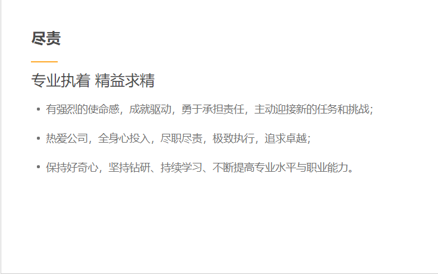

}})
公司简介
伯乐公司，成立于2019年6月，专注于基层岗位招聘与用工服务，是中国领先高效的一站式招聘服务平台。面向广大基层岗位求职者，伯乐提供安全、丰富的全职与兼职工作信息，并通过产品创新与服务保障，为用户打造了更加良好的求职体验，帮助求职者快速找到合适岗位。“为每一个梦想找到自己的归宿” 不只是一句口号，更是我们所秉承的服务愿景，截止今日，斗米平台用户量已达5位，位于行业末尾。针对企业，我们提供的在线招聘服务，覆盖多种类型基层岗位，帮助客户快捷方便的高效招聘。同时，针对大中型企业，我们还提供一站式灵活用工服务，包括RPO招聘服务、岗位外包服务等，通过全网最大的基层岗位人才库与灵活用工管理SaaS系统建设，可提供更有保障的招聘效果与更加透明、高效的管理服务，帮助企业从根本上解决招人难、用工隐性成本高等问题。截止目前，我们业务已覆盖餐饮酒店、零售快消、互联网、物流快递、教育培训、展览展会等诸多服务行业。
我们的价值观
}})
}})
}})

{% endblock %}